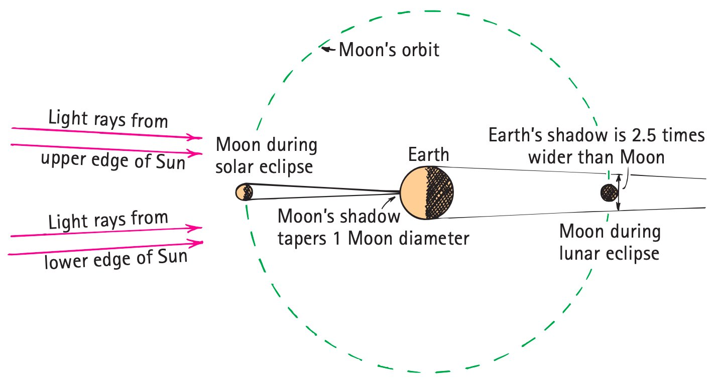

Close Reading
Measurement turns ideas into evidence
Physics is not only a collection of facts. It is a way of asking questions about the natural world and checking the answers against evidence. A claim becomes stronger when another person can repeat the measurement or observation and obtain compatible evidence.
A classic example is Eratosthenes’ estimate of Earth’s circumference. He connected a measured distance between two cities with a measured shadow angle. The power of the method is not the historical name; it is the structure of the reasoning: observe, measure, represent the situation, and use the model to make a claim that can be checked.

Models let measurements reach beyond the laboratory
Many important quantities cannot be measured directly with a ruler. Physicists therefore build models that connect accessible evidence to the quantity of interest. Eclipse shadows, scale drawings, similar triangles, and pinhole images are all examples of representations that make a hidden relationship visible.
A model is useful only if its assumptions and measurements are clear. The model does not replace evidence; it organizes evidence so that a prediction or estimate can be made.



Stop & Discuss
Choose one source figure. What was directly measured, and what conclusion required an inference or model?
Formulas are compact physical stories
An equation in physics is a compact statement about a relationship among physical quantities. Symbols must stand for measurable ideas, units matter, and the relationship should be interpreted before numbers are substituted.
For Eratosthenes, the calculation works because the measured angle represents a fraction of a complete circle. If the angle is about 1/50 of a circle, then the measured city separation represents about 1/50 of Earth’s circumference. The multiplication follows from the model; it is not a detached arithmetic trick.


Example 1
What scientific-thinking term means “an interpretation or conclusion drawn from observations”?
You Try It 1
What scientific-thinking term means “a tentative, testable explanation for observations”?
Scientific explanations must be testable
There is no single rigid “scientific method” that every investigation follows. Scientists may begin with an observation, a surprising pattern, a model, or a question. What matters is that claims meet evidence. A useful hypothesis makes a testable prediction, and a testable claim includes some possible observation that could count against it.
This attitude requires inquiry, integrity, and humility: ask what evidence would decide the issue, report what actually happened, and revise an explanation when the evidence does not support it.
Example 2
A student claims, “This surface is better because it has good energy,” but never defines what “better” or “good energy” means. Evaluate the claim’s testability and explain what would need to be measured.
You Try It 2
A student says, “If we double the ramp height, the cart will reach the bottom sooner,” and proposes timing repeated trials. Evaluate the claim’s testability and explain what would need to be measured.
Observation, inference, law, and theory do different jobs
An observation reports what was directly detected or measured. An inference is an interpretation built from those observations. A hypothesis is a tentative explanation that can be tested. A scientific law summarizes a consistent pattern or relationship, while a scientific theory is a broad explanatory framework supported by many lines of evidence.
These categories are not a ladder in which a theory eventually “turns into” a law. Laws describe patterns; theories explain. Both remain open to refinement when better evidence or models become available.
Example 3
A class models average speed with speed = distance/time. One student claims a cart that travels farther is always faster, even when the travel times differ. Critique the reasoning and state how the relationship should guide the thinking.
You Try It 3
A student uses F_net = F_right − F_left and substitutes two force magnitudes without first deciding which direction is positive. Critique the reasoning and state how the relationship should guide the thinking.
Evidence decides whether the model earns our trust
A physics explanation should connect a claim to observations, measurements, or a representation. When a formula or diagram is used, the explanation should say what the quantities mean and why the representation matches the situation. That is the difference between reasoning with a model and merely writing symbols.
Example 4
A student draws a box labeled “formula” with arrows from “numbers” directly to “answer,” but includes no physical quantities, units, or evidence. Critique the model and describe one feature you would add so it represents physics reasoning.
You Try It 4
The relationship \(F_{net}=F_{right}-F_{left}\) is proposed for a one-dimensional force situation. Explain in words what each term represents and why the equation is a model of the situation rather than merely an instruction to subtract numbers.